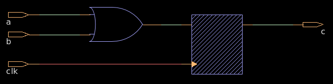

sequential( input a,b,, output c ); @(posedge clk)begin <= a b; end endmodule What is the module name?
Definition: ・Sequential logic produces outputs based on both the current inputs and the past states of the system. It includes memory elements that store the state information. Key Characteristics: ・Has memory or storage elements (e.g., flip-flops, registers). ・Output depends on both current inputs and stored states. ・Typically implemented using reg and always blocks in Verilog.